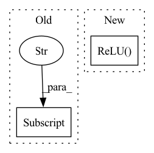

Pattern ID :12769
Before Change
)
// Number of output features from dense block
print(type(features[f"dense_block_{idx}"] ))
out_features = features[f"dense_block_{idx}"].out_features()
features[f"data_enc_level{idx}_bottleneck"] = nn.Conv3d(After Change
kernel_size=1,
padding=0,
)
features[f"data_enc_level{idx}_bottleneck_relu"] = nn.ReLU()
features[f"data_enc_level{idx+1}_pool"] = nn.MaxPool3d(
kernel_size=2, stride=2
)
In pattern: SUPERPATTERN
Frequency: 4
Non-data size: 2
Instances Fragment ID: 43247811
Project Name: rmeli/gnina-torch
Commit Name: f4b0b88ae32a00392096d51846a92985bc333e41
Time: 2021-10-20
Author: rocco.meli@biodtp.ox.ac.uk
File Name: gnina/models.py
M Class Name: Dense
N Class Name: Dense
M Method Name: __init__(5)
N Method Name: __init__(5)
M Parent Class: nn.Module
N Parent Class: nn.Module
M File Name: gnina/models.py
N File Name: gnina/models.py
M Start Line: 374
M End Line: 411
N Start Line: 391
N End Line: 463
Before Change
self.closedloop = closedloop
// ee_pose/grasp_pose: 7, n_past_action * 7
in_channels = 7 + kwargs["n_past_action"] * 7
self.fc_context = torch.nn.Sequential(
torch.nn.Linear(in_channels, 10),
torch.nn.ReLU(),After Change
torch.nn.Linear(64, 128),
torch.nn.ReLU(),
torch.nn.Linear(128, 256),
torch.nn.ReLU() ,
torch.nn.Linear(256, 512),
torch.nn.ReLU(),
) Fragment ID: 43247810
Project Name: wkentaro/reorientbot
Commit Name: 3b99b48dd0142eed6fcc0fd87e0e1dc9f95daf39
Time: 2021-06-11
Author: www.kentaro.wada@gmail.com
File Name: examples/target_pick/pose_net.py
M Class Name: PoseNet
N Class Name: PoseNet
M Method Name: __init__(2)
N Method Name: __init__(3)
M Parent Class: torch.nn.Module
N Parent Class: torch.nn.Module
M File Name: examples/target_pick/pose_net.py
N File Name: examples/target_pick/pose_net.py
M Start Line: 5
M End Line: 21
N Start Line: 9
N End Line: 18
Before Change
else:
use_bias = norm_layer == nn.InstanceNorm2d
model = [nn.ZeroPad2d(3) if os.environ["DEEPLIIF_SEED"] != "None" else nn.ReflectionPad2d(3),
nn.Conv2d(input_nc, ngf, kernel_size=7, padding=0, bias=use_bias),
norm_layer(ngf),
nn.ReLU(True)]After Change
model = [nn.ZeroPad2d(3),
nn.Conv2d(input_nc, ngf, kernel_size=7, padding=0, bias=use_bias),
norm_layer(ngf),
nn.ReLU( True) ]
n_downsampling = 2
for i in range(n_downsampling): // add downsampling layers Fragment ID: 43247809
Project Name: nadeemlab/deepliif
Commit Name: 41ce09abe97195df222066a45804b04c85a4f26f
Time: 2022-02-11
Author: 97479603+wendywwang@users.noreply.github.com
File Name: deepliif/models/networks.py
M Class Name: ResnetGenerator
N Class Name: ResnetGenerator
M Method Name: __init__(8)
N Method Name: __init__(8)
M Parent Class: nn.Module
N Parent Class: nn.Module
M File Name: deepliif/models/networks.py
N File Name: deepliif/models/networks.py
M Start Line: 350
M End Line: 376
N Start Line: 350
N End Line: 387